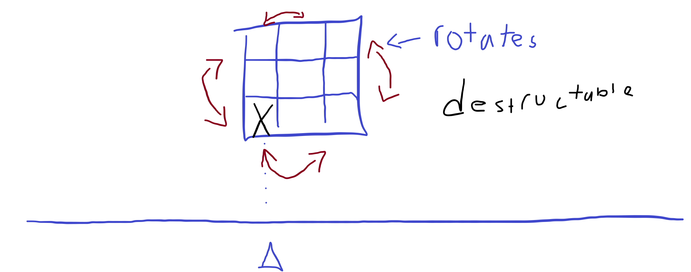

Tetris Blast
I. High Concept
While playing classic Tetris, you are given generic blocks that you must forge into the pieces you need.
II. Genre
Arcade, Puzzle, Shooter
III. Platform
Desktop Only
IV. Story
N/A (Abstract).
V. Esthetics
Graphics style: Abstract
Sound: 8-bit
Sound types: Scoring, shooting, rotating block
VI. Gameplay
Mechanics
The player can shoot to break a block, rotate a block, and can move a block & blaster (at the same time)
Control
Keyboard controls with WASD, SPACE, and QE
Teaching the game/New user experience aka "Onboarding"
There will be controls in a controls menu page that will explain the controls.
Player learning
There isnt a "beating the game" but to do well, the player should be able to think on their feat, and build up combos to gain big scores. Most skills are transferable from tetris.
VII. Screenshots

VIII. Documentation
For the process of this project, I started off by focusing a lot on the systems. I reused/was inspired by some of the features from circle blast. This is most clearly seen with the ship, which pretty similar to the circle blast ship. It has some modifications to it such as shooting being a method of it, and it only being able to move in the X direction, but otherwise is similar. The reason I did this was because it was similar to what I wanted to do, and its such a small class that the modifications make it decently different already. The bullets are also similar, but I removed the stuff that wasn't needed. To compensate for reusing those parts, I have three large new classes. The first is the tile which is each individual cube. They are just rectangles but I added features to change colors to them, for utility and for possible design features for the future. The main class used is the block class, which contains nine tiles. Block needs to store and manipulate the tiles, and so it has a fair few methods, such as redrawing the blocks (moving their position), rotating itself, getting the lowest tile on it, and more. On the note of rotating itself, my first way of doing it was with for loops, but I ended up using map instead. I got the idea from the first link in the sources list below. Block stack is the final new class, and it keeps track of all the scoring and collision. It has a grid of tiles and is able to check for a line being formed, and give out points. Initially, I wanted the array it stored to be just 0 or 1, but i realized that I couldn't clear the screen properly like that. That is why it is a 2d array of tiles. I decided to cut the game over screen and instead just display a high score screen on the menu to reduce time needed and also because I think it looks cool displaying the score when first booted up. For the score, I use local storage to store it so it should always be the highest you have. Honestly im pretty happy with how it turned out, with the only thing I regret is not giving myself more time to work on it. My math final ate up way more time than I though/it should have leaving way less time for this than intended.
IX. About the developer(s)
Thomas Berrios, 2nd year GDD major, SWEN minor. I enjoy playing and making games/interactive software. Programming in general is really fun for me. Not a design person but ill do it when needed.